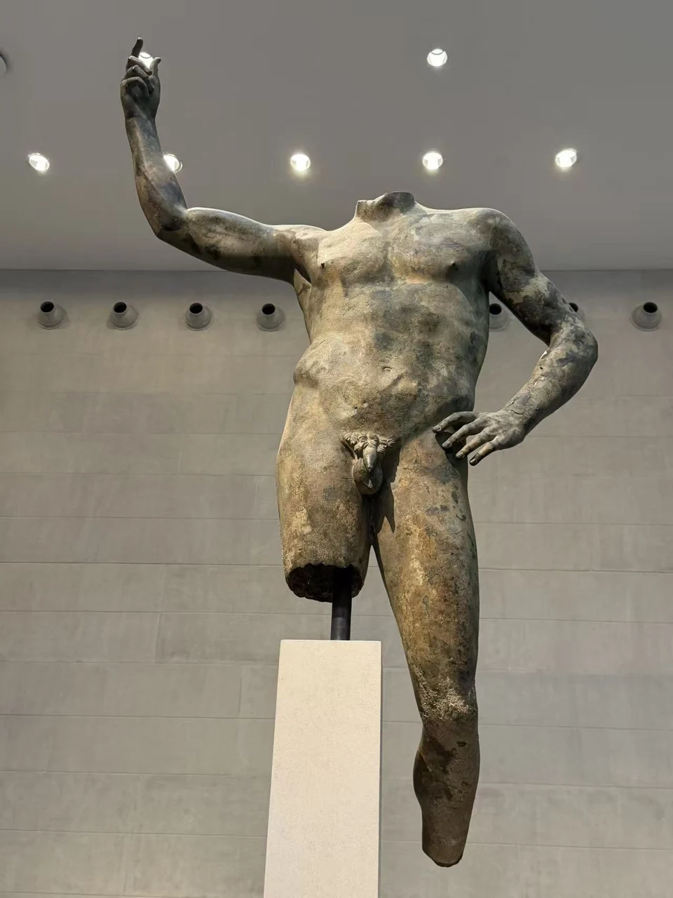
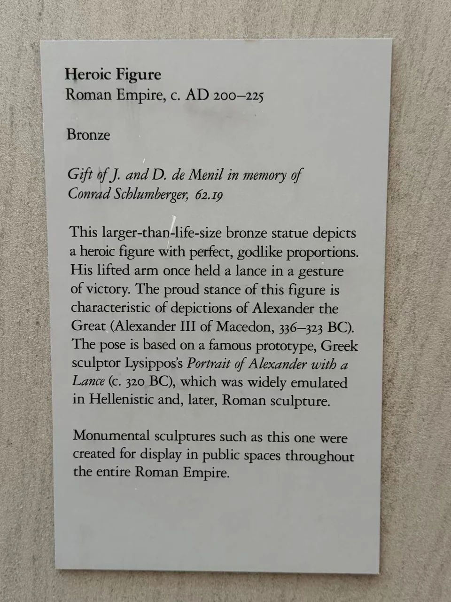

BRONZE / B01
英雄化人物像
失去头像以后，这具超过真人尺度的身体仍然抬起手臂。它借用英雄的站姿，向观看者表达一种不依赖衣冠的身份。

- 年代
- 约公元200–225年
- 材料
- 青铜
- 形制
- 大型人物像
- 尺寸
- 208.3 × 126.4 × 44.5厘米
- 收藏与观看
- 休斯顿美术馆 · 休斯顿
- 馆藏号
- 62.19
没有姓名的英雄身体
前臂抬起，另一侧手臂弯向腰间，胸腹随着站姿舒展。头部和部分肢体的缺失使目光更容易停在躯干上：肌肉并不只显示力量，也把一个平静站立的人塑造成值得仰望的形象。
休斯顿美术馆把这一姿态联系到利西波斯为亚历山大创造的持矛类型。不过，眼前铜像定为罗马时代约200—225年，具体人物仍未确认。裸体在这里可以承担英雄化的表达，形象的借用并不等于身份相同。 [1]
从正面绕到背面
正面容易让人把它看成一个轮廓；背面则显出肩胛、腰背与手臂共同构成的体积。残件没有取消它作为圆雕的多面性。两张现场照片放在一起，能看见站姿怎样从胸腹延伸到背部。
这件作品于1962年由德·梅尼尔夫妇捐赠入馆，以纪念Conrad Schlumberger。馆方记录也保留了断代的变化：入藏时曾被当作公元前4世纪希腊作品，后来改置于罗马塞维鲁时期。 [1]
英雄的身体，是一种可以被重新使用的身份语言。
换一个角度

现场展签与背景说明

资料与来源
断代、归属与收藏资料
原铸地点与最初的陈设环境尚未明确；现行馆方断代与希腊原型的年代属于两层信息。 [1]
基本资料亦参见本页现场展签；照片中的细节与馆方解释分别叙述。